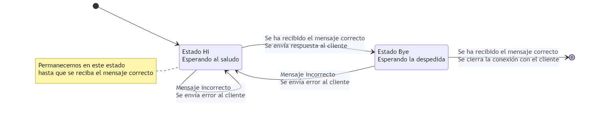

Como ya hemos comentado anteriormente, un protocolo, aplicado al mundo de las comunicaciones informáticas, es un conjunto de reglas que especifican la manera en la que se realiza la comunicación entre dos interlocutores.
Este conjunto de reglas establece el formato de los mensajes que se intercambian (texto, binario, JSON, XML, CSV, ...), las acciones que cada uno de los extremos de la comunicación deben realizar en cada momento (envío o recepción) y, lo que nos ocupa en este apartado del tema, si las acciones dependen de acciones anteriores o no.
En informática, un protocolo sin estado es un protocolo de comunicaciones que trata cada petición como una transacción independiente que no tiene relación con cualquier solicitud anterior, de modo que la comunicación se compone de pares independientes de solicitud y respuesta.
Wikipedia: Protocolo sin estado
El ejemplo más conocido de protocolo sin estado es HTTP.1 El protocolo no proporciona medio alguno de almacenamiento de datos de un usuario entre las peticiones, dejando esta tarea a niveles superiores y haciendo necesario el reenvío de información de manera continua para simular un funcionamiento con estado (cookies, cabeceras, etc.).
Un protocolo sin estado no requiere que el servidor retenga información de la sesión o de estado acerca de los intercambios de información durante la realización de múltiples peticiones. En contraste, un protocolo que requiere el mantenimiento del estado interno en el servidor se conoce como un protocolo con estado.
Por lo tanto, un estado es una configuración en un programa o máquina que depende de los estados anteriores y que determina el funcionamiento del sistema, en función de la entrada recibida y del estado actual en el que se encuentre el sistema.
Poniendo una analogía, podemos tomar una solicitud a la administración, donde debemos realizar varios pasos hasta resolver la solicitud.
Esto, que puede ser un procedimiento normal, refleja claramente un proceso en el que se siguen una serie de pasos y cuyo orden no se puede cambiar.
Por ejemplo, no tendría sentido hacer el pago de las tasas (paso 4) sin antes haber presentado la solicitud (paso 1) o sin haber recibido la confirmación de que la solicitud está completa.
Esto mismo pasa con algunos protocolos de comunicación.
Hay toda una teoría matemática, la teoría de grafos, desarrollada en torno a esto, junto con un modelo computacional, los autómatas finitos, que estudian y optimizan el desarrollo de aplicaciones basadas en estados.
La teoría de grafos es una rama de las matemáticas y las ciencias de la computación que estudia las propiedades de los grafos
La teoría de grafos tiene sus fundamentos en las matemáticas discretas y de las matemáticas aplicadas. Esta teoría requiere de diferentes conceptos de diversas áreas como combinatoria, álgebra, probabilidad, geometría de polígonos, aritmética y topología. Actualmente ha tenido mayor influencia en el campo de la informática, las ciencias de la computación y telecomunicaciones. Debido a la gran cantidad de aplicaciones en la optimización de recorridos, procesos, flujos y algoritmos de búsquedas, entre otros
Un autómata finito o máquina de estado finito es un modelo computacional que toma decisiones de computación de forma automática sobre una entrada para producir una salida.
Este modelo está conformado por un alfabeto, un conjunto de estados finito, una función de transición, un estado inicial y un conjunto de estados finales.
La finalidad de los autómatas finitos, entre otras, es la de reconocer lenguajes regulares, que corresponden a los lenguajes formales más simples según la Jerarquía de Chomsky.
Como en todos los casos que hemos estudiado con anterioridad, el protocolo es la pieza común entre los clientes y los servidores.
Nuestros clientes podrán estar bien o mal programados, de hecho muchos de nuestros clientes son interactivos, por lo que podemos alterar el orden de los comandos a nuestro antojo, no siendo esto ningún problema.
Debe ser el servidor el que tenga el control del proceso, el que asegure la integridad del sistema y de los datos, por lo tanto va a ser en la parte del servidor donde tengamos que realizar las modificaciones para adaptarlo al control y gestión de los estados.
Esto no quita que los clientes deban seguir sincronizados con el servidor para evitar situaciones de interbloqueo, ya que de una forma u otra el cliente siempre debe seguir el protocolo, aunque no los estados tal y como hemos dicho.
Vamos a ver qué pasos debemos seguir para controlar los estados en el servidor y cómo adaptar un cliente.
El ejemplo que vamos a utilizar es el de la actividad U4A03_ProtocoloSaludo. Primero vamos a aclarar cómo debe funcionar este protocolo.
Si el cliente está bien programado, el intercambio de información entre Cliente y Servidor se realiza en tres pasos
Ante un funcionamiento normal, este protocolo es bastante fácil de implementar. Sin embargo,
Estas son las circunstancias a las que debemos responder con los estados del protocolo, indicando en cada caso qué debe hacer cada una de las partes. Todo dependerá de la funcionalidad que esté implementando el protocolo.
Cada caso es diferente, por ejemplo, si es importante hacer los tres pasos en orden, ante cualquier fallo se debe volver a empezar (un borrado en una BD, una autenticación de tres vías). Si por el contrario, los dos primeros pasos se tienen que realizar de forma conjunta, pero el tercero es independiente, si el incumplimiento del protocolo se produce en ese momento, no es necesario que se repitan los dos primeros pasos, sino que sólo será necesario repetir el último.

public class U4A03_SaludoWorker extends Thread { Socket socketCliente; BufferedReader entrada; PrintWriter salida; private final String[] messages = {"Hi Server!", "Hi Client!", "Bye Server!", "Error. Unknown or unexpected command"}; public enum Estados { HI, BYE, END; } Estados estado; U4A03_SaludoWorker(Socket socketCliente) { this.socketCliente = socketCliente; // Inicializamos el valor del estado al estado inicial estado = Estados.HI; } @Override public void run() { try { // Establece canal de entrada entrada = new BufferedReader( new InputStreamReader(socketCliente.getInputStream())); // Obtenemos el canal de salida salida = new PrintWriter( new BufferedWriter( new OutputStreamWriter(socketCliente.getOutputStream())), true); // Recibe lo que envía el cliente hasta que el mensaje sea // END OF TRANSMISSION while (estado != Estados.END) { // Recibe la solicitud del cliente por el InputStream String str = entrada.readLine(); // Comprobamos si se ha cerrado el extremo cliente del socket // Y damos por concluida la comunicación. if (str == null) { estado = Estados.END; } else { // Mostramos la información recibida por consola System.out.println("CLIENTE > " + str); } // Controlamos la respuesta en función del mensaje recibido y // el estado actual switch (estado) { case HI: if (messages[0].equals(str)) { // Enviamos respuesta al cliente salida.println(messages[1]); // Cambiamos el estado del protocolo estado = Estados.BYE; } else { // Enviamos error al cliente salida.println(messages[3]); } break; case BYE: if (messages[2].equals(str)) { // Cambiamos el estado del protocolo estado = Estados.END; } else { // Enviamos error al cliente salida.println(messages[3]); estado = Estados.HI; } break; case END: // No sería necesario contemplarlo en este caso // Pero sí en otros en los que se tenga que enviar // algún mensaje antes de salir. break; } } } catch (IOException e) { System.out.println("Error de comunicación con el cliente"); } catch (Exception e) { System.out.println(e.getLocalizedMessage()); e.printStackTrace(); } finally { try { entrada.close(); System.out.println("Conexión cerrada: " + socketCliente); socketCliente.close(); } catch (IOException e) { System.out.println("Error inesperado cerrando los recursos"); } } } }
El código corresponde al worker de un servidor multihilo. Analicemos ahora el código por partes
Es recomendable usar propiedades para guardar los mensajes que queramos comparar y tener un ENuM para definir los estados. Los enum en Java permiten ser usados en los bloques switch-case.
La propiedad estado va a ser el punto central que controle el flujo de ejecución del servidor.
private final String[] messages = {"Hi Server!", "Hi Client!", "Bye Server!", "Error. Unknown or unexpected command"}; public enum Estados { HI, BYE, END; } Estados estado;
En el constructor, además de todas las propiedades, inicializamos el estado, asignándole el valor del estado inicial.
U4A03_SaludoWorker(Socket socketCliente) { this.socketCliente = socketCliente; // Inicializamos el valor del estado al estado inicial estado = Estados.HI; }
El servidor estará ejecutándose hasta que se alcance el estado final
// Recibe lo que envía el cliente hasta que el mensaje sea
// END OF TRANSMISSION
while (estado != Estados.END) {
En este ejemplo, el intercambio de información con el cliente se hace uno a uno, es decir se recibe un mensaje y se envía una respuesta, pero no tiene porqué ser así, se pueden recibir varios mensajes y no enviar respuesta, o cualquier combinación de envío respuesta que nos imaginemos.
El código que sigue e un control para saber si el cliente ha cerrado el socket, así evitamos tener excepciones de tipo NullPointerException o dejar al servidor en un bucle infinito. Forzamos la salida cambiando el estado del protocolo.
// Comprobamos si se ha cerrado el extremo cliente del socket // Y damos por concluida la comunicación. if (str == null) { estado = Estados.END; } else { // Mostramos la información recibida por consola System.out.println("CLIENTE > " + str); }
Este es el código que implementa el diagrama de estados que he diseñado para esta actividad.
Fijaos que el servidor tiene que realizar una comprobación para cada línea que sale de un estado. En este caso al ser sólo dos líneas, sirve con un if-else, pero puede ser un número mayor de opciones.
Además, una de las opciones tiene un comportamiento totalmente diferente al resto, ya que cuando se recibe el mensaje final, el protocolo no dice que enviemos una respuesta al cliente.
Esto debemos controlarlo en el cliente, porque si lo programamos de forma que envíe un mensaje y espere una respuesta, puede quedarse bloqueado en la lectura. Aprovechando que este es el último mensaje, más adelante veremos cómo se ha solventado en el cliente.y las opciones que tenemos para evitar posibles bloqueos como este.
// Controlamos la respuesta en función del mensaje recibido y // el estado actual switch (estado) { case HI: if (messages[0].equals(str)) { // Enviamos respuesta al cliente salida.println(messages[1]); // Cambiamos el estado del protocolo estado = Estados.BYE; } else { // Enviamos error al cliente salida.println(messages[3]); } break; case BYE: if (messages[2].equals(str)) { // Cambiamos el estado del protocolo estado = Estados.END; } else { // Enviamos error al cliente salida.println(messages[3]); estado = Estados.HI; } break; case END: // No sería necesario contemplarlo en este caso // Pero sí en otros en los que se tenga que enviar // algún mensaje antes de salir. break; }
Aunque un cliente interactivo como los que usamos para las pruebas no deberían cambiar su funcionalidad, sí hay que hacer pequeños ajustes para adaptar su funcionamiento a las posibles respuestas y errores que envía el servidor.
Como ya hemos dicho en el código del servidor, si implementamos el protocolo como un cliente de envío-respuesta, hay un caso en el que no debemos esperar una respuesta. Este es el caso de la salida, en la que se envía un mensaje pero no esperamos respuesta por parte del servidor.
Se puede pensar en poner una condición de salida para cuando el cliente envía el último mensaje, pero no podemos asegurar que ese mensaje cerrará la comunicación, porque dependerá del estado en el que se encuentre el servidor.
public class U4A03_SaludoClient { private static final String[] messages = {"Hi Server!", "Hi Client!", "Bye Server!", "Error. Unknown or unexpected command"}; public static void main(String[] args) throws IOException { Socket socketCliente = null; BufferedReader entrada = null; PrintWriter salida = null; // Creamos un socket en el lado cliente, enlazado con un // servidor que está en la misma máquina que el cliente // y que escucha en el puerto 4444 try { socketCliente = new Socket(args[0], Integer.parseInt(args[1])); // Establece canal de entrada entrada = new BufferedReader( new InputStreamReader(socketCliente.getInputStream())); // Obtenemos el canal de salida salida = new PrintWriter( new BufferedWriter( new OutputStreamWriter(socketCliente.getOutputStream())), true); } catch (IOException e) { System.err.println("No puede establecer canales de E/S para la conexión"); System.exit(-1); } Scanner stdIn = new Scanner(System.in); String linea; // El programa cliente no analiza los mensajes enviados por el // usuario, simplemente los reenvía al servidor hasta que se envía // el mensaje final del protocolo do { // Leo la entrada del usuario linea = stdIn.nextLine(); // La envia al servidor por el OutputStream salida.println(linea); // Recibe la respuesta del servidor por el InputStream linea = entrada.readLine(); if (linea == null) { // Comprobamos si se ha cerrado el extremo servidor del socket // Y damos por concluida la comunicación. break; } else { // Envía a la salida estándar la respuesta del servidor System.out.println("SERVIDOR > " + linea); } } while (true); // Libera recursos salida.close(); stdIn.close(); socketCliente.close(); } }
El código corresponde a un cliente interactivo genérico, que va enviando mensajes y esperando la respuesta de los mismos sin hacer ningún tipo de control sobre lo que se envía o lo que recibe.
Analicemos algunos aspectos del código del cliente
La parte que sigue es equivalente a la que hemos usado en el servidor. No modificamos el flujo envío-recepción, pero sí que comprobamos si el lado del servidor ha cerrado el socket (ha realizado todo el protocolo correctamente) para decidir que el cliente finalice su ejecución.
// Recibe la respuesta del servidor por el InputStream linea = entrada.readLine(); if (linea == null) { // Comprobamos si se ha cerrado el extremo servidor del socket // Y damos por concluida la comunicación. break; } else { // Envía a la salida estándar la respuesta del servidor System.out.println("SERVIDOR > " + linea); } } while (true);
Lectura con timeout
Otra manera distinta de hacer lo mismo es usando lecturas con timeout.
En este ejemplo podríamos haber comprobado si el mensaje enviado es el mensaje de finalización. Es ese caso, si todo ha ido bien, no deberíamos esperar una respuesta por parte del server, pero si ha habido algún error, sí debemos realizar una lectura del socket.
Usando este código
// El programa cliente no analiza los mensajes enviados por el
// usuario, simplemente los reenvía al servidor hasta que se envía
// el mensaje final del protocolo
do {
// Leo la entrada del usuario
linea = stdIn.nextLine();
// La envia al servidor por el OutputStream
salida.println(linea);
// Si enviamos el mensaje de salida, no hacemos una lectura indefinida
if (linea.equals(messages[2])) {
socketCliente.setSoTimeout(100);
} else {
socketCliente.setSoTimeout(0);
}
try {
// Recibe la respuesta del servidor por el InputStream
linea = entrada.readLine();
// Envía a la salida estándar la respuesta del servidor
System.out.println("SERVIDOR > " + linea);
} catch (SocketTimeoutException ste) {
// Pasado el timeout no se ha recibido una respuesta
// Podemos suponer que el server no envía respuesta
// Eso indica que el protocolo se ha completado
// Damos por concluida la comunicación.
break;
}
} while (true);
fijamos un tiempo de espera pasado el cual se producirá una SocketTimeoutException indicando que no se ha leído nada del socket. Si por el contrario se lee información del socket, esta se muestra por la consola.
En este caso en concreto, esta solución no funciona porque el servidor ya ha cerrado el socket. Esto sería útil cuando tengamos que hacer una lectura opcional en mitad de un protocolo, y serviría tanto para un cliente como para un servidor.